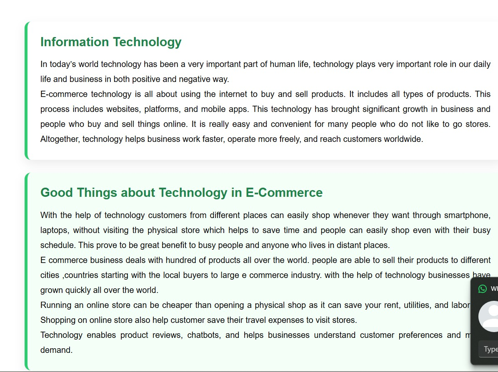

|
 |
| Our Products Page | Daraz Products Page |
|
|
| Our Products Page | Daraz Products Page |
for this section, reference was taken from Daraz web app. The whole products page has taken reference from daraz. specially the color scheme and the containers. darker background with lighter shade containers was taken reference. also the layout was taken reference from daraz. the title and price too. Improvement was made in the picture radius. we also added a hover effect for each of the product containers.
 |
 |
| Our footer | Blogger.com footer |
for the footer, we took reference from blogger.com. the simplicity and readability was taken reference from this website. all the key information and links are clearly mentioned in the footer. Contact details, address and social media links are provided. the main difference we fine from the referred website is the color scheme. we picked a lighter shade of green which would fit eco mart's theme. we also added a in built navigation section in the footer itself so its easier to navigate that way. we also added a navigate up button which on clicked would lead us to the beginning of the page.
 |
 |
| Our products Description | Daraz.com.np product Description |
Products description page was also taken reference from Daraz's product description page. The layout was taken reference from the page as well as the color scheme. The product image is on the left side, The product description is in the middle container where one can buy products, and delivery opitons available and contact details are on the right container. our take on improvement of this page was to add an "other products" section where the customer can see other products if interested. if clicked, it would lead them to a similar webpage but details of the clicked product.
The reference webpage contains more images, using visuals to help users understand e-commerce quickly with minimal text. In contrast, our webpage contains fewer images and focuses more on providing detailed information through written content, using text as the primary source of understanding. My webpage uses a card-based layout with clean white containers and rounded corners. Each container is highlighted by a distinct and colorful green left-accent border, which clearly separates sections and improves readability. In contrast, the reference webpage uses simpler box designs and focuses more on layout and imagery, while my page is more detailed and information-focused.
|  |  |
| Our Blog Page | Nepali Patro Blog Page |
My webpage describes the e-commerce business, with reference to another webpage. My page has more text and fewer images as compared to the reference site since it has more information and less emphasis on layout. The design is card-based with clean white containers that have rounded corners with a distinct and very colorful green left-accent border. It creates a well-defined visual hierarchy and bold green serif headings, large inner padding, and a combination of paragraph and list of numbers ensures a visual order. My page is more elaborate and is written more, as compared to the reference site that uses images to gain an understanding fast.
The quote from index page was inspired from the apple store website. The difference is we changed it to be a more relatable quote for Eco-mart's theme and we found Mahatma Gandhi's quote the most suitable. we added a picture of him in the home page as well as his popular quote so that it is the first thing people notice.